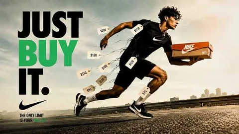
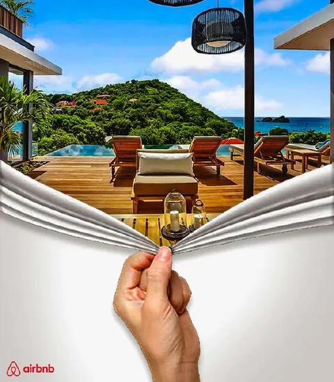
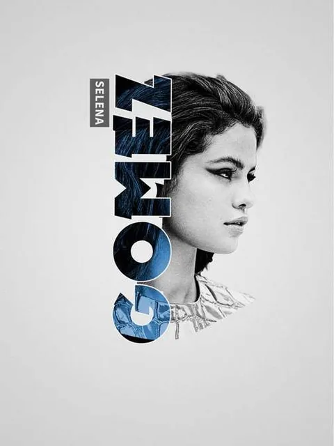

THE CREATIVEDIMENSION
A Portfolio by Danielle Julian
Graphic Designer • UX/UI Designer • Visual Storyteller
Playful Systems. Purposeful Stories.
Nearly 4 years of hands-on practice.
- Explore
- Look around
- Click a portal
Chapter I · Selected work
Work that tells a story
UX research, brand identity, culture-jamming campaigns and surreal composites — a cross-section of the archive.
- UX case studySaveSip / Cup$i
- UX case studySmartCart
- UX case studyCrosswalks That Explain Themselves
- Berry Vibes Digital Cookbook
- </>HTML • CSS • JavaScript • Creative codeInteractive Web LabCoded projectsInteractive Web Lab
- NYC 2028 — Liberty Lights the World

Just Buy It
Airbnb Escape- FE!N

Selena Gomez Typography- Blue Moon
- Journey
Chapter II · Philosophy
Designing playful systems with purpose.
A multidisciplinary practice built through graphic design, UX/UI, branding, web, advertising, interaction, and visual storytelling.
Danielle discovered graphic design around 2021 and began practicing consistently in late 2022. Since then, the work has expanded from posters, ads, and photo manipulation into UX/UI, brand systems, responsive websites, front-end coding, interaction design, and research-driven product concepts.
Chapter III · Process
How I build
From research and concept to visual systems, interface decisions, code, and presentation.
- DiscoverResearch • audience • context
- DefineProblem • goals • constraints
- DesignBrand • type • layout • UI
- PrototypeWireframes • interaction • code
- RefineCritique • iteration • polish
- PresentCase study • story • delivery
Final chapter
Let's make something memorable.
Available now — coursework complete, commencement December 2026.